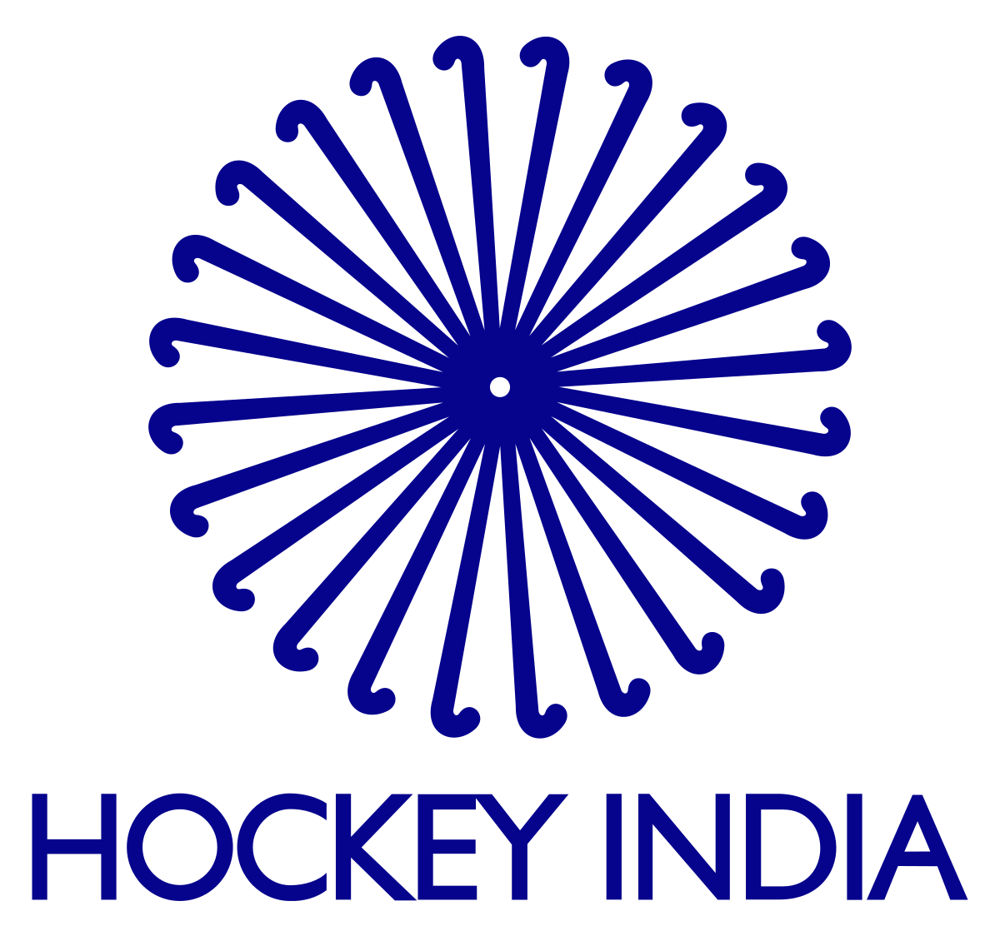
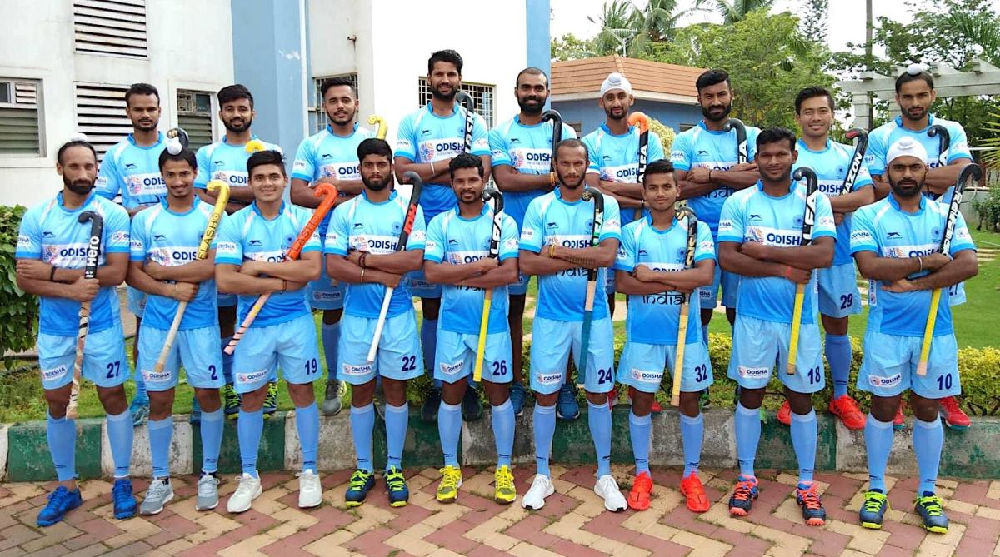

|  | Equipments needed for hockey are- Puck,Hockey Stick,Skates,Mouth Guard,Helmet.Hockey Pants,Jersey and Socks,Shoulder Pads,etc. |
 |
In each of these sports, two teams play against each other by trying to manoeuvre the object of play, either a type of ball or a disk (such as a puck), into the opponent's goal using a hockey stick. Two notable exceptions use a straight stick and an open disk (still referred to as a "puck") with a hole in the center instead. The first case is a style of floor hockey whose rules were codified in 1936 during the Great Depression by Canada's Sam Jacks. The second case involves a variant which was later modified in roughly the 1970s to make a related game that would be considered suitable for inclusion as a team sport in the newly emerging Special Olympics. The floor game of gym ringette, though related to floor hockey, is not a true variant due to the fact that it was designed in the 1990s and modelled off of the Canadian ice skating team sport of ringette, which was invented in Canada in 1963. Ringette was also invented by Sam Jacks, the same Canadian who codified the rules for the open disk style of floor hockey 1936.